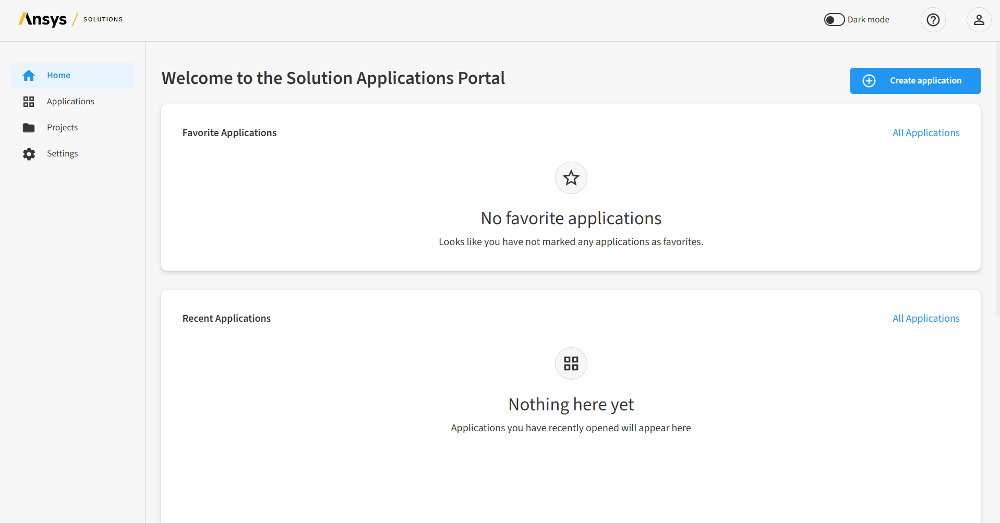
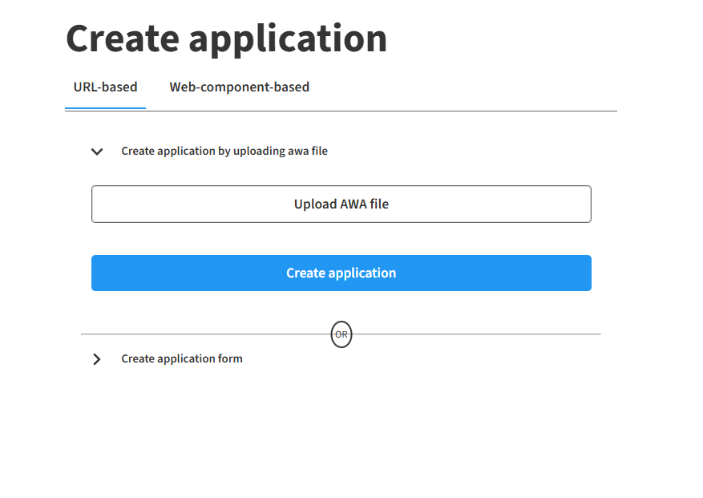
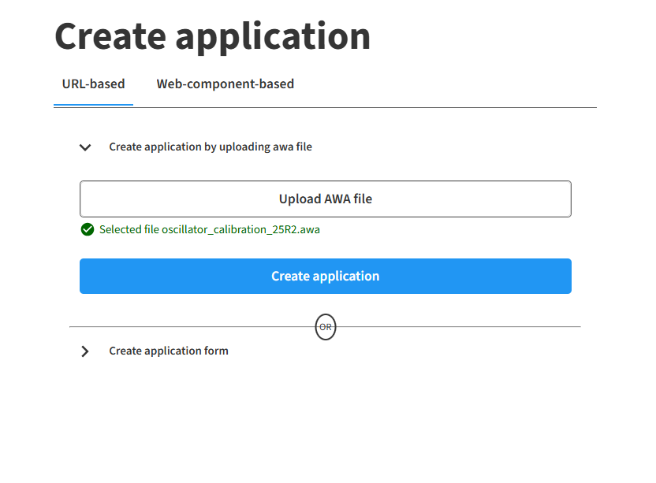
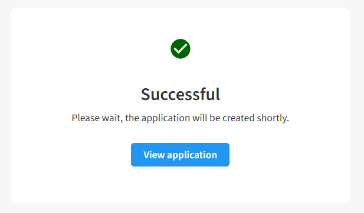
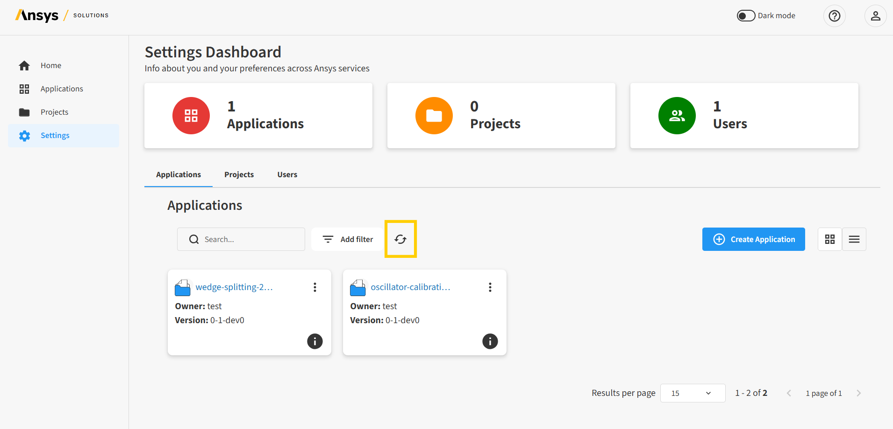
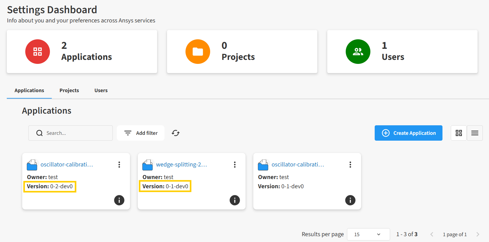
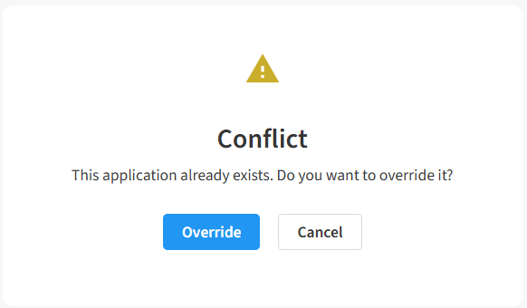
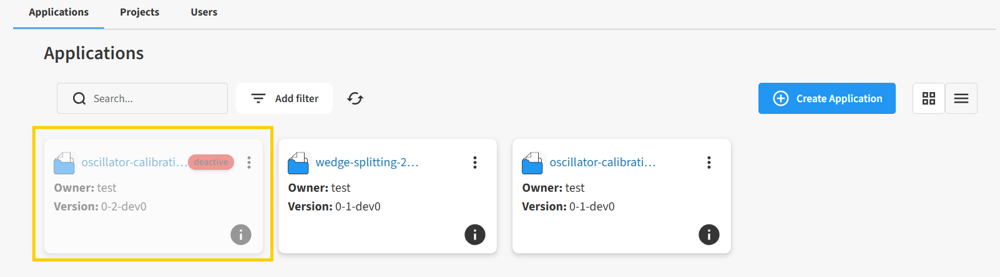
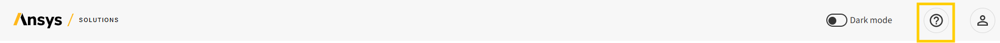

Add an app to the portal#
To add a new Ansys Web App (AWA) to the Ansys App Portal™, you must upload the corresponding optiSLang application (.awa) file.
You can do this via the user interface of the portal.
Note
The following steps assume that you have an optiSLang .awa file available.
You can also download the sample .awa file from here.
Upload AWA file from the portal#
Open the portal at the following URL:
http://portal.<hostname>.<domain_name>:<tr_port>
Note
If the browser displays a warning about an insecure connection, click Continue to site.

Sign in with the portal administrator credentials (
admin/adminby default).The portal opens to its Home page in a new browser tab.

Click Create application.
The Create application dialog opens.
On the URL-based tab, expand Create application by uploading .awa file.

Click Upload AWA file, then find and open the
.awafile for the solution you want to add.If the file is uploaded successfully, the file name is displayed in green.

Click Create application.
If the request to add the app was processed successfully, the following confirmation message is shown, otherwise a failure error message is displayed.

Warning
If the app already exists on the portal, a Conflict validation message is shown, asking if you want to override the existing app. For more information on overrides, see App versioning on the portal before proceeding.
Click View application.
You are returned to the Application settings dashboard, an administrative page which shows all the apps added to the portal. The new app is be visible in a few seconds and can be managed from here by portal administrators.
Tip
It takes some time to add an app to the portal, so you may wish to refresh the dashboard periodically during the process.

To add a new project, click New project.
On the New project dialog:
Enter the project name.
Enter a description of the project (optional).
Click Create.
The project opens to the first page of the app. From here, you can you can start the solution workflow.
{kind=link}
{kind=link}
{kind=link}
{kind=link}
{kind=link}
App versioning on the portal#
Solution apps are defined using the combination of the name and version values specified in the pyproject.toml file of the app. This file can be obtained by renaming the .awa file to a .zip file and extracting its content.
Possibles scenarios when adding an app to the portal are as follows:
Scenario 1: The app has the same name but a different version than an existing app. The app is created as a different app.

Scenario 2: The app has the same name and version as an existing app. A Conflict dialog is displayed, asking whether you want override the existing app.

{kind=link}
{kind=link}
If you click the Override button, the new app replaces the existing one, while preserving all projects created with the previous app.
Note
While the app is being overridden, it becomes unavailable for a short period of time. In the portal, the app is marked as deactive until the new app is fully available. You can see the status of the app by refreshing the Application settings dashboard.
{kind=link}

See also
For more information, see the Ansys App Portal documentation:
Portal administrator documentation:
http://portal.<hostname>.<domain_name>:<tr_port>/api/documentation/admin/index.htmlPortal user documentation:
http://portal.<hostname>.<domain_name>:<tr_port>/api/documentation/end-user/index.html
Alternatively, you can click the Help icon in the portal header to view the documentation specific to your current login.
{kind=link}
